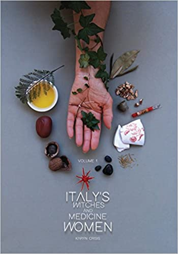

-
Title: The Witch's Book of Potions: The Power of Bubbling Brews, Simmering Infusions & Magical Elixirs
By: Michael FurieDescription: Join popular author Michael Furie on an exploration of the many brews, infusions, and elixirs that empower your magical work. Featuring more than 90 easy-to-follow recipes that call for ingredients found at the local grocery store, this hands-on book is a must-have resource for your shelf. Discover potions to raise your psychic skills, boost your sabbaths celebrations, access the power of astrological signs, and restore wellness in yourself and others. Learn how to use different cauldrons and kettles, make other magical mixtures like oils and ointments, and work with a wide variety of correspondences. You'll also enjoy magical cocktails, recipes for increasing luck and money, herbal creations that channel the energy of the elements, and more. This irresistible book brings the iconic image of a witch stirring her brew into twenty-first-century reality.
-
Title: Italian Folk Magic: Rue's Kitchen Witchery
By: Mary-Grace FahrunItalian Folk Magic is a fascinating journey through the magical, folkloric, and healing traditions of Italy with an emphasis on the practical. The reader learns uniquely Italian methods of magical protection and divination and spells for love, sex, control, and revenge. The book contains magical and religious rituals and prayers and explores divination techniques, crafting, blessing rituals, witchcraft, and, of course, the evil eye, known as malocchio in Italian--the author explains what it is, where it comes from, and, crucially, how to get rid of it. This book can help Italians regain their magical heritage, but Italian folk magic is a beautiful, powerful, and effective magical tradition that is accessible to anyone who wants to learn it
-
Title: Italian Magic: Secret Lives of Women
By: Karyn CrisisLooking for the meaning behind your Italian grandma's rituals? Curious about their source and wondering if there's more to the story? Seeking magic beyond what the Romans wrote about in fragments? Wondering why no one can seem to find the mythical witch cults? This book will answer all these questions and reveal a groundbreaking view into the hidden world of rural Italy: the ONLY pervasive holistic system of daily sacred magic indigenous to Italy and her islands, whose traditions existed in all rural communities regardless of cultural influences.
-
Title: Honoring Your Ancestors: A Guide to Ancestral Veneration
By: Mallorie VaudoiseLearn how to connect to your ancestors and receive the benefits that come from veneration--deeper spirituality, more love in your life, better outcomes in creative pursuits, powerful magic and spellwork, and an improved sense of wellness. Filled with hands-on techniques and tips, Honoring Your Ancestors shows you how to create an ancestor altar so you can work with ancestors of all kinds. Author Mallorie Vaudoise also shares fascinating ideas for incorporating rituals, spells, family recipes, and even practices like music and dancing to help you open this wonderful new dimension of your spiritual journey.
-

Title: Italy's Witches and Medicine Women Volume 1
By: Karyn CrisisKaryn Crisis never had the chance to decide if the spirit world was real or imaginary. She has been able to sense the unseen world of passed-on relatives, angels, and ghosts since childhood. Training as a Spiritualist Medium as an adult, she became a popular platform Medium and healer in the San Francisco Bay Area. In 2009, she took a fateful trip to Italy’s Tuscany Region, which would have a lasting impact far beyond what she could have ever imagined: Goddesses from Italy's history suddenly began appearing to Karyn as clearly as other spirit people had, and they began transmitting to her the information of a most interesting cultural melting pot in Italy that gave rise to its unique and complex spiritual landscape. Among the information shared was the knowledge of Italy's own indigenous Lineage healing: a female shamanism hiding in-plain-sight that can be traced back to pre-pagan times.
-
Title: SORCERER'S SCREED
By: Jochum magnus EggertssonWould you like to increase your prosperity, secure the love of the man or woman of your dreams, seek protection from evil forces or grumpy neighbours, catch a liar or raise the dead? If so, the Sorcerer‘s Screed is just the book for you. The spells have been adherent to Scandinavian history and culture for centuries and Icelanders have been using magic spells from the first settlement for everyday purposes as well as the more unorthodox. The Sorcerer’s Screed is the world‘s most comprehensive collection of Nordic spells. Each spell comes with a diagram and specific instructions for their use and purpose.
-
Title: Queering Your Craft: Witchcraft from the Margins
By: Cassandra Snow"As evident through the pages of this book, Snow holds a vision for the queer aspirant who hears the call to witchery, to find healing, empowerment, strength, and pride through their craft. Through creative and unique journal prompts, introspection, rituals, and spells, Snow achieves this beautifully, and herein lays the perfect guide for the queer witch to stand in their power and stand beside others; truly queering our craft with compassion and pride." --Mat Auryn, author of Psychic Witch: A Metaphysical Guide to Meditation, Magick, and Manifestation
-
Title: The Crooked Path: An Introduction to Traditional Witchcraft
By: KeldenPart the thorny bramble and take a walk along the bewitchingly mysterious Crooked Path. Within these pages discover a wealth of hands-on tips and techniques to begin your journey into the realm of Traditional Witchcraft. Learn to weave a powerful personal practice that is informed by folklore and grounded in your own location and natural landscape. Along the way you will find valuable information regarding the tools, rituals, and spells of this fascinating tradition, together with lessons on connecting with deities, familiar spirits, ancestors, and the spirits of place. With supportive advice and encouragement, Kelden provides everything you need to successfully navigate your own path, helping you master even advanced practices such as hedge-crossing as you transform your day-today experience into a life filled with magic and spirit.
All books
Ancestor Work
Astral Projection
Baneful Magic
Celtic
Chaos Magic
Crystal
Deity Work
Demonolatry
Divination
Draconic
Egregores
Folk Italian
Healing
Herbs and Alchemy
Kemetic
Kitchen Magic
Manifestation
Miscellaneous
Norse
Prosperity
Protection
Sigils
Spell Books
Spirit Work
Traditional W
Vampirism
Wiccan